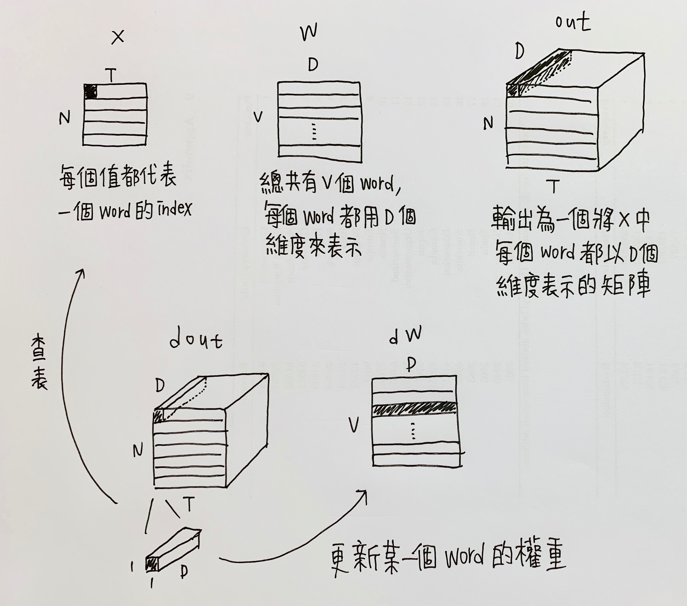

<!DOCTYPE html>
<html lang="en">

<!-- Head tag -->
<head><meta name="generator" content="Hexo 3.8.0">

    <!-- hexo-inject:begin --><!-- hexo-inject:end --><meta charset="utf-8">
    <meta http-equiv="X-UA-Compatible" content="IE=edge">
    <meta name="viewport" content="width=device-width, initial-scale=1">
    <meta name="google-site-verification" content="Mxm9E-j9Gv7WuZQYUJ6BytlCEOcioYX-OQuCqPdBp6I">

    <!--Description-->
    
        <meta name="description" content="簡介

實作 RNN 並應用至 Image Captioning
實作 LSTM 並應用至 Image Captioning
Neural Network 視覺化
Style Transfer 在藝術畫作上的應用
Generative Adversial Network 實作並應用在 MNIST 資料">
    

    <!--Author-->
    
        <meta name="author" content="Qoo">
    

    <!--Open Graph Title-->
    
        <meta property="og:title" content="CS231n assignment 3">
    

    <!--Open Graph Description-->
    

    <!--Open Graph Site Name-->
    <meta property="og:site_name" content="Qoo&#39;s Blog">

    <!--Type page-->
    
        <meta property="og:type" content="article">
    

    <!--Page Cover-->
    

        <meta name="twitter:card" content="summary">
    

    <!-- Title -->
    
    <title>CS231n assignment 3 - Qoo&#39;s Blog</title>

    <!-- Bootstrap Core CSS -->
    <link href="//maxcdn.bootstrapcdn.com/bootstrap/3.3.6/css/bootstrap.min.css" rel="stylesheet">

    <!-- Custom CSS -->
    <link rel="stylesheet" href="/css/style.css">

    <!-- Custom Fonts -->
    <link href="//maxcdn.bootstrapcdn.com/font-awesome/4.6.3/css/font-awesome.min.css" rel="stylesheet" type="text/css">
    <link href="//fonts.googleapis.com/css?family=Lora:400,700,400italic,700italic" rel="stylesheet" type="text/css">
    <link href="//fonts.googleapis.com/css?family=Open+Sans:300italic,400italic,600italic,700italic,800italic,400,300,600,700,800" rel="stylesheet" type="text/css">

    <!-- HTML5 Shim and Respond.js IE8 support of HTML5 elements and media queries -->
    <!-- WARNING: Respond.js doesn't work if you view the page via file:// -->
    <!--[if lt IE 9]>
    <script src="//oss.maxcdn.com/libs/html5shiv/3.7.0/html5shiv.js"></script>
    <script src="//oss.maxcdn.com/libs/respond.js/1.4.2/respond.min.js"></script>
    <![endif]-->

    <!-- Gallery -->
    <link href="//cdnjs.cloudflare.com/ajax/libs/featherlight/1.3.5/featherlight.min.css" type="text/css" rel="stylesheet">

    <!-- Google Analytics -->
    


    <!-- favicon -->
    
    <link rel="icon" href="/img/favicon.ico"><!-- hexo-inject:begin --><!-- hexo-inject:end -->
    
	
</head>


<body>

    <!-- hexo-inject:begin --><!-- hexo-inject:end --><!-- Menu -->
    <!-- Navigation -->
<nav class="navbar navbar-default navbar-custom navbar-fixed-top">
    <div class="container-fluid">
        <!-- Brand and toggle get grouped for better mobile display -->
        <div class="navbar-header page-scroll">
            <button type="button" class="navbar-toggle" data-toggle="collapse" data-target="#bs-example-navbar-collapse-1">
                <span class="sr-only">Toggle navigation</span>
                <span class="icon-bar"></span>
                <span class="icon-bar"></span>
                <span class="icon-bar"></span>
            </button>
            <a class="navbar-brand" href="/">Qoo's Blog</a>
        </div>

        <!-- Collect the nav links, forms, and other content for toggling -->
        <div class="collapse navbar-collapse" id="bs-example-navbar-collapse-1">
            <ul class="nav navbar-nav navbar-right">
                
                    <li>
                        <a href="/">
                            
                                Home
                            
                        </a>
                    </li>
                
                    <li>
                        <a href="/archives">
                            
                                Archives
                            
                        </a>
                    </li>
                
                    <li>
                        <a href="/tags">
                            
                                Tags
                            
                        </a>
                    </li>
                
                    <li>
                        <a href="/categories">
                            
                                Categories
                            
                        </a>
                    </li>
                
                    <li>
                        <a href="https://github.com/p61402">
                            
                                <i class="fa fa-github fa-stack-2x"></i>
                            
                        </a>
                    </li>
                
            </ul>
        </div>
        <!-- /.navbar-collapse -->
    </div>
    <!-- /.container -->
</nav>

    <!-- Main Content -->
    <!-- Page Header -->
<!-- Set your background image for this header in your post front-matter: cover -->

<header class="intro-header" style="background-image: url('/img/banner.jpg')">
    <div class="container">
        <div class="row">
            <div class="col-lg-8 col-lg-offset-2 col-md-10 col-md-offset-1">
                <div class="post-heading">
                    <h1>CS231n assignment 3</h1>
                    
                    <span class="meta">
                        <!-- Date and Author -->
                        
                        
                            2019-05-29
                        
                    </span>
                </div>
            </div>
        </div>
    </div>
</header>

<!-- Post Content -->
<article>
    <div class="container">
        <div class="row">

            <!-- Tags and categories -->
           
                <div class="col-lg-4 col-lg-offset-2 col-md-5 col-md-offset-1 post-tags">
                    
                        


<a href="/tags/Deep-Learning/">#Deep Learning</a> <a href="/tags/Computer-Vision/">#Computer Vision</a>


                    
                </div>
                <div class="col-lg-4 col-md-5 post-categories">
                    
                        

<a href="/categories/course/">學校課程</a>/ <a href="/categories/course/圖像辨識/">圖像辨識</a>

                    
                </div>
            

            <!-- Gallery -->
            

            <!-- Post Main Content -->
            <div class="col-lg-8 col-lg-offset-2 col-md-10 col-md-offset-1">
                <h1 id="簡介">簡介</h1>
<ol type="1">
<li>實作 RNN 並應用至 Image Captioning</li>
<li>實作 LSTM 並應用至 Image Captioning</li>
<li>Neural Network 視覺化</li>
<li>Style Transfer 在藝術畫作上的應用</li>
<li>Generative Adversial Network 實作並應用在 MNIST 資料</li>
</ol>
<a id="more"></a>
<h1 id="image-captioning-with-rnns">Image Captioning with RNNs</h1>
<h2 id="資料集">資料集</h2>
<p><a href="http://cocodataset.org/" target="_blank" rel="noopener">Microsoft COCO</a> 資料集，2014 年的版本，總共有80,000 張的訓練圖片與 40,000 張的驗證圖片，每張圖片都有 5 個 captions。</p>
<table>
<colgroup>
<col style="width: 33%">
<col style="width: 33%">
<col style="width: 33%">
</colgroup>
<thead>
<tr class="header">
<th>&lt;START&gt; a group of people fly their kites in a field of flowers &lt;END&gt;</th>
<th>&lt;START&gt; a dirt road a wooden bench some grass and trees &lt;END&gt;</th>
<th>&lt;START&gt; a bird sitting on a tree &lt;UNK&gt; in a &lt;UNK&gt; &lt;END&gt;</th>
</tr>
</thead>
<tbody>
<tr class="odd">
<td></td>
<td></td>
<td></td>
</tr>
</tbody>
</table>
<h2 id="vanilla-rnn">Vanilla RNN</h2>
<h3 id="step-forward">step forward</h3>
<p>原始 RNN 的計算方法如下：</p>
<p><span class="math inline">\(h_t=tanh(W_h\cdot h_{t-1}+W_x\cdot X_t+b)\)</span></p>
<p>而 <span class="math inline">\(tanh(x)=\dfrac{e^{2x}-1}{e^{2x}+1}\)</span></p>
<p>不過我這邊使用<code>numpy</code>自帶的<code>tanh</code>函數，使用上會較為穩定，試過自定義一個<code>tanh</code>函式，不知為何會導致 gradient exploding 的問題。</p>
<figure class="highlight python"><table><tr><td class="gutter"><pre><span class="line">1</span><br><span class="line">2</span><br><span class="line">3</span><br><span class="line">4</span><br><span class="line">5</span><br><span class="line">6</span><br><span class="line">7</span><br></pre></td><td class="code"><pre><span class="line"><span class="function"><span class="keyword">def</span> <span class="title">rnn_step_forward</span><span class="params">(x, prev_h, Wx, Wh, b)</span>:</span></span><br><span class="line">    next_h, cache = <span class="keyword">None</span>, <span class="keyword">None</span></span><br><span class="line"></span><br><span class="line">    next_h = np.tanh(prev_h.dot(Wh) + x.dot(Wx) + b)</span><br><span class="line">    cache = x, prev_h, Wx, Wh, b, next_h</span><br><span class="line"></span><br><span class="line">    <span class="keyword">return</span> next_h, cache</span><br></pre></td></tr></table></figure>
<h3 id="step-backward">step backward</h3>
<p></p>
<figure class="highlight python"><table><tr><td class="gutter"><pre><span class="line">1</span><br><span class="line">2</span><br><span class="line">3</span><br><span class="line">4</span><br><span class="line">5</span><br><span class="line">6</span><br><span class="line">7</span><br><span class="line">8</span><br><span class="line">9</span><br><span class="line">10</span><br><span class="line">11</span><br><span class="line">12</span><br><span class="line">13</span><br></pre></td><td class="code"><pre><span class="line"><span class="function"><span class="keyword">def</span> <span class="title">rnn_step_backward</span><span class="params">(dnext_h, cache)</span>:</span></span><br><span class="line">    dx, dprev_h, dWx, dWh, db = <span class="keyword">None</span>, <span class="keyword">None</span>, <span class="keyword">None</span>, <span class="keyword">None</span>, <span class="keyword">None</span></span><br><span class="line"></span><br><span class="line">    x, prev_h, Wx, Wh, b, next_h = cache</span><br><span class="line"></span><br><span class="line">    dtanh = dnext_h * (<span class="number">1</span> - next_h ** <span class="number">2</span>)</span><br><span class="line">    dx = dtanh.dot(Wx.T)</span><br><span class="line">    dprev_h = dtanh.dot(Wh.T)</span><br><span class="line">    dWx = x.T.dot(dtanh)</span><br><span class="line">    dWh = prev_h.T.dot(dtanh)</span><br><span class="line">    db = np.sum(dtanh, axis=<span class="number">0</span>)</span><br><span class="line"></span><br><span class="line">    <span class="keyword">return</span> dx, dprev_h, dWx, dWh, db</span><br></pre></td></tr></table></figure>
<h3 id="forward">forward</h3>
<p>每筆資料都有 <code>T</code> 個 timestamp，所以用迴圈依序建構每個 timestamp 的 rnn layer。</p>
<figure class="highlight python"><table><tr><td class="gutter"><pre><span class="line">1</span><br><span class="line">2</span><br><span class="line">3</span><br><span class="line">4</span><br><span class="line">5</span><br><span class="line">6</span><br><span class="line">7</span><br><span class="line">8</span><br><span class="line">9</span><br><span class="line">10</span><br><span class="line">11</span><br><span class="line">12</span><br></pre></td><td class="code"><pre><span class="line"><span class="function"><span class="keyword">def</span> <span class="title">rnn_forward</span><span class="params">(x, h0, Wx, Wh, b)</span>:</span></span><br><span class="line">    h, cache = <span class="keyword">None</span>, <span class="keyword">None</span></span><br><span class="line"></span><br><span class="line">    N, T, D = x.shape</span><br><span class="line">    H = h0.shape[<span class="number">1</span>]</span><br><span class="line">    h, cache = np.empty((N, T, H)), [<span class="keyword">None</span>] * T</span><br><span class="line">    h[:,<span class="number">0</span>,:], cache[<span class="number">0</span>] = rnn_step_forward(x[:,<span class="number">0</span>,:], h0, Wx, Wh, b)</span><br><span class="line"></span><br><span class="line">    <span class="keyword">for</span> i <span class="keyword">in</span> range(<span class="number">1</span>, T):</span><br><span class="line">        h[:,i,:], cache[i] = rnn_step_forward(x[:,i,:], h[:,i<span class="number">-1</span>,:], Wx, Wh, b)</span><br><span class="line"></span><br><span class="line">    <span class="keyword">return</span> h, cache</span><br></pre></td></tr></table></figure>
<h3 id="backward">backward</h3>
<figure class="highlight python"><table><tr><td class="gutter"><pre><span class="line">1</span><br><span class="line">2</span><br><span class="line">3</span><br><span class="line">4</span><br><span class="line">5</span><br><span class="line">6</span><br><span class="line">7</span><br><span class="line">8</span><br><span class="line">9</span><br><span class="line">10</span><br><span class="line">11</span><br><span class="line">12</span><br><span class="line">13</span><br><span class="line">14</span><br></pre></td><td class="code"><pre><span class="line"><span class="function"><span class="keyword">def</span> <span class="title">rnn_backward</span><span class="params">(dh, cache)</span>:</span></span><br><span class="line">    dx, dh0, dWx, dWh, db = <span class="keyword">None</span>, <span class="keyword">None</span>, <span class="keyword">None</span>, <span class="keyword">None</span>, <span class="keyword">None</span></span><br><span class="line"></span><br><span class="line">    N, T, H = dh.shape</span><br><span class="line">    D = cache[<span class="number">0</span>][<span class="number">0</span>].shape[<span class="number">1</span>]</span><br><span class="line">    dx, dprev_h, dWx, dWh, db = np.empty((N, T, D)), np.zeros((N, H)), np.zeros((D, H)), np.zeros((H, H)), np.zeros((H,))</span><br><span class="line"></span><br><span class="line">    <span class="keyword">for</span> i <span class="keyword">in</span> range(T<span class="number">-1</span>,<span class="number">-1</span>,<span class="number">-1</span>):</span><br><span class="line">        dx[:,i,:], dprev_h, dWx_temp, dWh_temp, db_temp = rnn_step_backward(dh[:,i,:] + dprev_h, cache[i])</span><br><span class="line">        dWx, dWh, db = dWx + dWx_temp, dWh + dWh_temp, db + db_temp</span><br><span class="line"></span><br><span class="line">    dh0 = dprev_h</span><br><span class="line"></span><br><span class="line">    <span class="keyword">return</span> dx, dh0, dWx, dWh, db</span><br></pre></td></tr></table></figure>
<h2 id="word-embedding">Word Embedding</h2>
<p></p>
<h3 id="forward-1">forward</h3>
<figure class="highlight python"><table><tr><td class="gutter"><pre><span class="line">1</span><br><span class="line">2</span><br><span class="line">3</span><br><span class="line">4</span><br><span class="line">5</span><br><span class="line">6</span><br><span class="line">7</span><br></pre></td><td class="code"><pre><span class="line"><span class="function"><span class="keyword">def</span> <span class="title">word_embedding_forward</span><span class="params">(x, W)</span>:</span></span><br><span class="line">    out, cache = <span class="keyword">None</span>, <span class="keyword">None</span></span><br><span class="line"></span><br><span class="line">    out = W[x,:]</span><br><span class="line">    cache = x, W</span><br><span class="line"></span><br><span class="line">    <span class="keyword">return</span> out, cache</span><br></pre></td></tr></table></figure>
<h3 id="backward-1">backward</h3>
<figure class="highlight python"><table><tr><td class="gutter"><pre><span class="line">1</span><br><span class="line">2</span><br><span class="line">3</span><br><span class="line">4</span><br><span class="line">5</span><br><span class="line">6</span><br><span class="line">7</span><br><span class="line">8</span><br></pre></td><td class="code"><pre><span class="line"><span class="function"><span class="keyword">def</span> <span class="title">word_embedding_backward</span><span class="params">(dout, cache)</span>:</span></span><br><span class="line">    dW = <span class="keyword">None</span></span><br><span class="line"></span><br><span class="line">    x, W = cache</span><br><span class="line">    dW = np.zeros_like(W)</span><br><span class="line">    np.add.at(dW, x, dout)</span><br><span class="line"></span><br><span class="line">    <span class="keyword">return</span> dW</span><br></pre></td></tr></table></figure>
<h2 id="rnn-for-image-captioning">RNN for image captioning</h2>
<p></p>
<figure class="highlight python"><table><tr><td class="gutter"><pre><span class="line">1</span><br><span class="line">2</span><br><span class="line">3</span><br><span class="line">4</span><br><span class="line">5</span><br><span class="line">6</span><br><span class="line">7</span><br><span class="line">8</span><br><span class="line">9</span><br><span class="line">10</span><br><span class="line">11</span><br><span class="line">12</span><br><span class="line">13</span><br><span class="line">14</span><br><span class="line">15</span><br><span class="line">16</span><br><span class="line">17</span><br><span class="line">18</span><br><span class="line">19</span><br><span class="line">20</span><br><span class="line">21</span><br><span class="line">22</span><br><span class="line">23</span><br><span class="line">24</span><br><span class="line">25</span><br><span class="line">26</span><br><span class="line">27</span><br><span class="line">28</span><br><span class="line">29</span><br><span class="line">30</span><br><span class="line">31</span><br><span class="line">32</span><br><span class="line">33</span><br><span class="line">34</span><br></pre></td><td class="code"><pre><span class="line"><span class="function"><span class="keyword">def</span> <span class="title">loss</span><span class="params">(self, features, captions)</span>:</span></span><br><span class="line">    captions_in = captions[:, :<span class="number">-1</span>]</span><br><span class="line">    captions_out = captions[:, <span class="number">1</span>:]</span><br><span class="line"></span><br><span class="line">    <span class="comment"># You'll need this</span></span><br><span class="line">    mask = (captions_out != self._null)</span><br><span class="line"></span><br><span class="line">    <span class="comment"># Weight and bias for the affine transform from image features to initial</span></span><br><span class="line">    <span class="comment"># hidden state</span></span><br><span class="line">    W_proj, b_proj = self.params[<span class="string">'W_proj'</span>], self.params[<span class="string">'b_proj'</span>]</span><br><span class="line"></span><br><span class="line">    <span class="comment"># Word embedding matrix</span></span><br><span class="line">    W_embed = self.params[<span class="string">'W_embed'</span>]</span><br><span class="line"></span><br><span class="line">    <span class="comment"># Input-to-hidden, hidden-to-hidden, and biases for the RNN</span></span><br><span class="line">    Wx, Wh, b = self.params[<span class="string">'Wx'</span>], self.params[<span class="string">'Wh'</span>], self.params[<span class="string">'b'</span>]</span><br><span class="line"></span><br><span class="line">    <span class="comment"># Weight and bias for the hidden-to-vocab transformation.</span></span><br><span class="line">    W_vocab, b_vocab = self.params[<span class="string">'W_vocab'</span>], self.params[<span class="string">'b_vocab'</span>]</span><br><span class="line"></span><br><span class="line">    loss, grads = <span class="number">0.0</span>, &#123;&#125;</span><br><span class="line"></span><br><span class="line">    feature_out, feature_cache = affine_forward(features, W_proj, b_proj)</span><br><span class="line">    word_embed_out, word_embed_cache = word_embedding_forward(captions_in, W_embed)</span><br><span class="line">    rnn_out, rnn_cache = rnn_forward(word_embed_out, feature_out, Wx, Wh, b)</span><br><span class="line">    score, score_cache = temporal_affine_forward(rnn_out, W_vocab, b_vocab)</span><br><span class="line">    loss, dout = temporal_softmax_loss(score, captions_out, mask)</span><br><span class="line"></span><br><span class="line">    dscore, grads[<span class="string">'W_vocab'</span>], grads[<span class="string">'b_vocab'</span>] = temporal_affine_backward(dout, score_cache)</span><br><span class="line">    drnn, dh0_rnn, grads[<span class="string">'Wx'</span>], grads[<span class="string">'Wh'</span>], grads[<span class="string">'b'</span>] = rnn_backward(dscore, rnn_cache)</span><br><span class="line">    grads[<span class="string">'W_embed'</span>] = word_embedding_backward(drnn, word_embed_cache)</span><br><span class="line">    dx_feature, grads[<span class="string">'W_proj'</span>], grads[<span class="string">'b_proj'</span>] = affine_backward(dh0_rnn, feature_cache)</span><br><span class="line"></span><br><span class="line">    <span class="keyword">return</span> loss, grads</span><br></pre></td></tr></table></figure>
<h2 id="overfit-small-data">Overfit small data</h2>

<div style="display: flex; justify-content: center;">
    
</div>

<h2 id="test-time-sampling">Test-time sampling</h2>
<figure class="highlight python"><table><tr><td class="gutter"><pre><span class="line">1</span><br><span class="line">2</span><br><span class="line">3</span><br><span class="line">4</span><br><span class="line">5</span><br><span class="line">6</span><br><span class="line">7</span><br><span class="line">8</span><br><span class="line">9</span><br><span class="line">10</span><br><span class="line">11</span><br><span class="line">12</span><br><span class="line">13</span><br><span class="line">14</span><br><span class="line">15</span><br><span class="line">16</span><br><span class="line">17</span><br><span class="line">18</span><br><span class="line">19</span><br><span class="line">20</span><br></pre></td><td class="code"><pre><span class="line"><span class="function"><span class="keyword">def</span> <span class="title">sample</span><span class="params">(self, features, max_length=<span class="number">30</span>)</span>:</span></span><br><span class="line">    N = features.shape[<span class="number">0</span>]</span><br><span class="line">    captions = self._null * np.ones((N, max_length), dtype=np.int32)</span><br><span class="line"></span><br><span class="line">    <span class="comment"># Unpack parameters</span></span><br><span class="line">    W_proj, b_proj = self.params[<span class="string">'W_proj'</span>], self.params[<span class="string">'b_proj'</span>]</span><br><span class="line">    W_embed = self.params[<span class="string">'W_embed'</span>]</span><br><span class="line">    Wx, Wh, b = self.params[<span class="string">'Wx'</span>], self.params[<span class="string">'Wh'</span>], self.params[<span class="string">'b'</span>]</span><br><span class="line">    W_vocab, b_vocab = self.params[<span class="string">'W_vocab'</span>], self.params[<span class="string">'b_vocab'</span>]</span><br><span class="line"></span><br><span class="line">    hidden, _ = affine_forward(features, W_proj, b_proj)</span><br><span class="line">    cur_word = self._start</span><br><span class="line">    <span class="keyword">for</span> n <span class="keyword">in</span> range(max_length):</span><br><span class="line">        word_embed, _ = word_embedding_forward(cur_word, W_embed)</span><br><span class="line">        hidden, _ = rnn_step_forward(word_embed, hidden, Wx, Wh, b)</span><br><span class="line">        score, _ = affine_forward(hidden, W_vocab, b_vocab)</span><br><span class="line">        cur_word = np.argmax(score, axis=<span class="number">1</span>)</span><br><span class="line">        captions[:, n] = cur_word</span><br><span class="line"></span><br><span class="line">    <span class="keyword">return</span> captions</span><br></pre></td></tr></table></figure>
<p>一些結果：</p>

<div style="display: flex; justify-content: center;">
    
</div>
<div style="display: flex; justify-content: center;">
    
</div>
<div style="display: flex; justify-content: center;">
    
</div>
<div style="display: flex; justify-content: center;">
    
</div>

<h1 id="image-captioning-with-lstms">Image Captioning with LSTMs</h1>
<h2 id="lstm">LSTM</h2>
<h3 id="step-forward-1">step forward</h3>
<figure>
<figcaption>修正：右方應為 elementwise multiplication</figcaption>
</figure>
<figure class="highlight python"><table><tr><td class="gutter"><pre><span class="line">1</span><br><span class="line">2</span><br><span class="line">3</span><br><span class="line">4</span><br><span class="line">5</span><br><span class="line">6</span><br><span class="line">7</span><br><span class="line">8</span><br><span class="line">9</span><br><span class="line">10</span><br><span class="line">11</span><br><span class="line">12</span><br><span class="line">13</span><br><span class="line">14</span><br><span class="line">15</span><br></pre></td><td class="code"><pre><span class="line"><span class="function"><span class="keyword">def</span> <span class="title">lstm_step_forward</span><span class="params">(x, prev_h, prev_c, Wx, Wh, b)</span>:</span></span><br><span class="line">    next_h, next_c, cache = <span class="keyword">None</span>, <span class="keyword">None</span>, <span class="keyword">None</span></span><br><span class="line">    N, H = prev_h.shape</span><br><span class="line"></span><br><span class="line">    gates = prev_h.dot(Wh) + x.dot(Wx) + b</span><br><span class="line">    gates[:,:<span class="number">3</span>*H] = sigmoid(gates[:,:<span class="number">3</span>*H])</span><br><span class="line">    gates[:,<span class="number">3</span>*H:] = np.tanh(gates[:,<span class="number">3</span>*H:])</span><br><span class="line">    i, f, o, g = gates[:,:H], gates[:,H:<span class="number">2</span>*H], gates[:,<span class="number">2</span>*H:<span class="number">3</span>*H], gates[:,<span class="number">3</span>*H:<span class="number">4</span>*H],</span><br><span class="line"></span><br><span class="line">    next_c = f * prev_c + i * g</span><br><span class="line">    next_h = o * np.tanh(next_c)</span><br><span class="line"></span><br><span class="line">    cache = x, prev_h, prev_c, Wx, Wh, b, next_h, next_c, i, f, o, g</span><br><span class="line"></span><br><span class="line">    <span class="keyword">return</span> next_h, next_c, cache</span><br></pre></td></tr></table></figure>
<h3 id="step-backward-1">step backward</h3>
<p></p>
<figure class="highlight python"><table><tr><td class="gutter"><pre><span class="line">1</span><br><span class="line">2</span><br><span class="line">3</span><br><span class="line">4</span><br><span class="line">5</span><br><span class="line">6</span><br><span class="line">7</span><br><span class="line">8</span><br><span class="line">9</span><br><span class="line">10</span><br><span class="line">11</span><br><span class="line">12</span><br><span class="line">13</span><br><span class="line">14</span><br><span class="line">15</span><br><span class="line">16</span><br><span class="line">17</span><br><span class="line">18</span><br><span class="line">19</span><br><span class="line">20</span><br></pre></td><td class="code"><pre><span class="line"><span class="function"><span class="keyword">def</span> <span class="title">lstm_step_backward</span><span class="params">(dnext_h, dnext_c, cache)</span>:</span></span><br><span class="line">    dx, dprev_h, dprev_c, dWx, dWh, db = <span class="keyword">None</span>, <span class="keyword">None</span>, <span class="keyword">None</span>, <span class="keyword">None</span>, <span class="keyword">None</span>, <span class="keyword">None</span></span><br><span class="line"></span><br><span class="line">    x, prev_h, prev_c, Wx, Wh, b, next_h, next_c, i, f, o, g = cache</span><br><span class="line"></span><br><span class="line">    dnext_c = dnext_c + o * (<span class="number">1</span> - np.tanh(next_c) ** <span class="number">2</span>) * dnext_h</span><br><span class="line">    df = dnext_c * prev_c</span><br><span class="line">    di = dnext_c * g</span><br><span class="line">    dg = dnext_c * i</span><br><span class="line">    do = dnext_h * np.tanh(next_c)</span><br><span class="line">    dgates = np.hstack((di*i*(<span class="number">1</span>-i), df*f*(<span class="number">1</span>-f), do*o*(<span class="number">1</span>-o), dg*(<span class="number">1</span>-g**<span class="number">2</span>)))</span><br><span class="line"></span><br><span class="line">    dx = dgates.dot(Wx.T)</span><br><span class="line">    dprev_h = dgates.dot(Wh.T)</span><br><span class="line">    dprev_c = dnext_c * f</span><br><span class="line">    dWx = x.T.dot(dgates)</span><br><span class="line">    dWh = prev_h.T.dot(dgates)</span><br><span class="line">    db = np.sum(dgates, axis=<span class="number">0</span>)</span><br><span class="line"></span><br><span class="line">    <span class="keyword">return</span> dx, dprev_h, dprev_c, dWx, dWh, db</span><br></pre></td></tr></table></figure>
<h3 id="forward-2">forward</h3>
<figure class="highlight python"><table><tr><td class="gutter"><pre><span class="line">1</span><br><span class="line">2</span><br><span class="line">3</span><br><span class="line">4</span><br><span class="line">5</span><br><span class="line">6</span><br><span class="line">7</span><br><span class="line">8</span><br><span class="line">9</span><br><span class="line">10</span><br><span class="line">11</span><br><span class="line">12</span><br></pre></td><td class="code"><pre><span class="line"><span class="function"><span class="keyword">def</span> <span class="title">lstm_forward</span><span class="params">(x, h0, Wx, Wh, b)</span>:</span></span><br><span class="line">    h, cache = <span class="keyword">None</span>, <span class="keyword">None</span></span><br><span class="line"></span><br><span class="line">    N, T, D = x.shape</span><br><span class="line">    H = h0.shape[<span class="number">1</span>]</span><br><span class="line">    h, c, cache = np.zeros((N, T, H)), np.zeros((N, H)), [<span class="keyword">None</span>] * T</span><br><span class="line">    h[:,<span class="number">0</span>,:], c, cache[<span class="number">0</span>] = lstm_step_forward(x[:,<span class="number">0</span>,:], h0, c, Wx, Wh, b)</span><br><span class="line"></span><br><span class="line">    <span class="keyword">for</span> i <span class="keyword">in</span> range(<span class="number">1</span>, T):</span><br><span class="line">        h[:,i,:], c, cache[i] = lstm_step_forward(x[:,i,:], h[:,i<span class="number">-1</span>,:], c, Wx, Wh, b)</span><br><span class="line"></span><br><span class="line">    <span class="keyword">return</span> h, cache</span><br></pre></td></tr></table></figure>
<h3 id="backward-2">backward</h3>
<figure class="highlight python"><table><tr><td class="gutter"><pre><span class="line">1</span><br><span class="line">2</span><br><span class="line">3</span><br><span class="line">4</span><br><span class="line">5</span><br><span class="line">6</span><br><span class="line">7</span><br><span class="line">8</span><br><span class="line">9</span><br><span class="line">10</span><br><span class="line">11</span><br><span class="line">12</span><br><span class="line">13</span><br><span class="line">14</span><br></pre></td><td class="code"><pre><span class="line"><span class="function"><span class="keyword">def</span> <span class="title">lstm_backward</span><span class="params">(dh, cache)</span>:</span></span><br><span class="line">    dx, dh0, dWx, dWh, db = <span class="keyword">None</span>, <span class="keyword">None</span>, <span class="keyword">None</span>, <span class="keyword">None</span>, <span class="keyword">None</span></span><br><span class="line"></span><br><span class="line">    N, D = cache[<span class="number">0</span>][<span class="number">0</span>].shape</span><br><span class="line">    T, H = dh.shape[<span class="number">1</span>:]</span><br><span class="line">    dx, dprev_h, dWx, dWh, db, dc = np.zeros((N, T, D)), np.zeros((N, H)), np.zeros((D, <span class="number">4</span>*H)), np.zeros((H, <span class="number">4</span>*H)), np.zeros((<span class="number">4</span>*H,)), np.zeros((N, H))</span><br><span class="line"></span><br><span class="line">    <span class="keyword">for</span> i <span class="keyword">in</span> range(T<span class="number">-1</span>, <span class="number">-1</span>, <span class="number">-1</span>):</span><br><span class="line">        dx[:,i,:], dprev_h, dc, dWx_temp, dWh_temp, db_temp = lstm_step_backward(dh[:,i,:] + dprev_h, dc, cache[i])</span><br><span class="line">        dWx, dWh, db= dWx + dWx_temp, dWh + dWh_temp, db + db_temp</span><br><span class="line"></span><br><span class="line">    dh0 = dprev_h</span><br><span class="line"></span><br><span class="line">    <span class="keyword">return</span> dx, dh0, dWx, dWh, db</span><br></pre></td></tr></table></figure>
<h2 id="overfit-small-data-1">Overfit small data</h2>

<div style="display: flex; justify-content: center;">
    
</div>

<h2 id="lstm-test-time-sampling">LSTM test-time sampling</h2>

<div style="display: flex; justify-content: center;">
    
</div>
<div style="display: flex; justify-content: center;">
    
</div>
<div style="display: flex; justify-content: center;">
    
</div>
<div style="display: flex; justify-content: center;">
    
</div>

<h1 id="network-visualization">Network Visualization</h1>
<h2 id="saliency-maps">Saliency Maps</h2>
<p>Saliency Map 的概念就是透過計算 <span class="math inline">\(loss\)</span> 對 <span class="math inline">\(X\)</span> 的梯度 <span class="math inline">\(dx\)</span>，觀察圖片的哪一個部分對分類的影響較為顯著。</p>
<p>假設圖片的 channel 數為 3，Saloency Map 就是將 <span class="math inline">\(dx\)</span> 取絕對值後，取 3 個 channel 之中的最大值。</p>
<figure class="highlight python"><table><tr><td class="gutter"><pre><span class="line">1</span><br><span class="line">2</span><br><span class="line">3</span><br><span class="line">4</span><br><span class="line">5</span><br><span class="line">6</span><br><span class="line">7</span><br><span class="line">8</span><br><span class="line">9</span><br><span class="line">10</span><br><span class="line">11</span><br><span class="line">12</span><br><span class="line">13</span><br><span class="line">14</span><br><span class="line">15</span><br><span class="line">16</span><br><span class="line">17</span><br></pre></td><td class="code"><pre><span class="line"><span class="function"><span class="keyword">def</span> <span class="title">compute_saliency_maps</span><span class="params">(X, y, model)</span>:</span></span><br><span class="line">    saliency = <span class="keyword">None</span></span><br><span class="line"></span><br><span class="line">    x = tf.convert_to_tensor(X, dtype=X.dtype)</span><br><span class="line">    y = tf.convert_to_tensor(y, dtype=tf.int32)</span><br><span class="line">    N = x.shape[<span class="number">0</span>]</span><br><span class="line"></span><br><span class="line">    <span class="keyword">with</span> tf.GradientTape() <span class="keyword">as</span> t:</span><br><span class="line">        t.watch(x)</span><br><span class="line">        score = model.call(x)</span><br><span class="line">        correct_class = tf.gather_nd(score, tf.stack((tf.range(N), y), axis=<span class="number">1</span>))</span><br><span class="line"></span><br><span class="line">    dx = t.gradient(score, x)</span><br><span class="line">    dx = tf.abs(dx)</span><br><span class="line">    saliency = tf.reduce_max(dx, axis=<span class="number">3</span>)</span><br><span class="line"></span><br><span class="line">    <span class="keyword">return</span> saliency</span><br></pre></td></tr></table></figure>
<p></p>
<h2 id="fooling-images">Fooling Images</h2>
<p>既然這個梯度可以用來表示這張圖片中影響分類的關鍵部分，那麼我們是否能利用這個梯度來更新原始圖片，產生出一個看起來與原始圖片差不多，但是卻分類錯誤的圖片呢？</p>
<p>因此我們使用一個錯誤的類別當作正確答案來計算 loss，並利用這個 loss 計算對於原始圖片的梯度，再用這個梯度對原始圖片進行更新，看看是否能產生一張以假亂真的圖片。</p>
<p>順帶一提，更新的方法稱為 Gradient Ascent。</p>
<figure class="highlight python"><table><tr><td class="gutter"><pre><span class="line">1</span><br><span class="line">2</span><br><span class="line">3</span><br><span class="line">4</span><br><span class="line">5</span><br><span class="line">6</span><br><span class="line">7</span><br><span class="line">8</span><br><span class="line">9</span><br><span class="line">10</span><br><span class="line">11</span><br><span class="line">12</span><br><span class="line">13</span><br><span class="line">14</span><br><span class="line">15</span><br><span class="line">16</span><br><span class="line">17</span><br><span class="line">18</span><br><span class="line">19</span><br><span class="line">20</span><br><span class="line">21</span><br><span class="line">22</span><br><span class="line">23</span><br><span class="line">24</span><br></pre></td><td class="code"><pre><span class="line"><span class="function"><span class="keyword">def</span> <span class="title">make_fooling_image</span><span class="params">(X, target_y, model)</span>:</span></span><br><span class="line">    <span class="comment"># Make a copy of the input that we will modify</span></span><br><span class="line">    X_fooling = X.copy()</span><br><span class="line"></span><br><span class="line">    <span class="comment"># Step size for the update</span></span><br><span class="line">    learning_rate = <span class="number">1</span></span><br><span class="line"></span><br><span class="line">    X_fooling = tf.convert_to_tensor(X_fooling)</span><br><span class="line"></span><br><span class="line">    <span class="keyword">for</span> i <span class="keyword">in</span> range(<span class="number">100</span>):</span><br><span class="line">        <span class="keyword">with</span> tf.GradientTape() <span class="keyword">as</span> t:</span><br><span class="line">            t.watch(X_fooling)</span><br><span class="line">            score = model.call(X_fooling)</span><br><span class="line">            pred_y = np.argmax(score[<span class="number">0</span>])</span><br><span class="line">            loss = score[<span class="number">0</span>, target_y]</span><br><span class="line"></span><br><span class="line">        g = t.gradient(loss, X_fooling)</span><br><span class="line">        dx = learning_rate * g / tf.norm(g)</span><br><span class="line">        X_fooling += dx</span><br><span class="line"></span><br><span class="line">        <span class="keyword">if</span> pred_y == target_y:</span><br><span class="line">            <span class="keyword">break</span></span><br><span class="line"></span><br><span class="line">    <span class="keyword">return</span> X_fooling</span><br></pre></td></tr></table></figure>
<p></p>
<h2 id="class-visualization">Class visualization</h2>
<p>那麼反過來說若給我們一張隨機的圖片，我們是否能夠透過同樣的方法，使得這張圖片被模型分類為某一個類別呢？</p>
<p>若 <span class="math inline">\(I\)</span> 是一張圖片，而 <span class="math inline">\(y\)</span> 是目標類別，模型對於 <span class="math inline">\(I\)</span> 在類別 <span class="math inline">\(y\)</span> 的分數為 <span class="math inline">\(s_y(I)\)</span>。</p>
<p>我們希望產生一張圖片 <span class="math inline">\(I^*\)</span> 使得他在類別 <span class="math inline">\(y\)</span> 的分數越高越好：</p>
<p><span class="math display">\[
I^* = {\arg\max}_I (s_y(I) - R(I))
\]</span></p>
<p>其中 <span class="math inline">\(R\)</span> 是一個 L2 reguralization term：</p>
<p><span class="math display">\[
R(I) = \lambda \|I\|_2^2
\]</span></p>
<figure class="highlight python"><table><tr><td class="gutter"><pre><span class="line">1</span><br><span class="line">2</span><br><span class="line">3</span><br><span class="line">4</span><br><span class="line">5</span><br><span class="line">6</span><br><span class="line">7</span><br></pre></td><td class="code"><pre><span class="line"><span class="keyword">with</span> tf.GradientTape() <span class="keyword">as</span> tape:</span><br><span class="line">    tape.watch(X)</span><br><span class="line">    score = model.call(X)</span><br><span class="line">    loss = score[<span class="number">0</span>, target_y]</span><br><span class="line"></span><br><span class="line">g = tape.gradient(loss, X) + l2_reg * X * X</span><br><span class="line">X += learning_rate * g</span><br></pre></td></tr></table></figure>
<table>
<colgroup>
<col style="width: 20%">
<col style="width: 20%">
<col style="width: 20%">
<col style="width: 20%">
<col style="width: 20%">
</colgroup>
<thead>
<tr class="header">
<th>iteration 1/100</th>
<th>iteration 25/100</th>
<th>iteration 50/100</th>
<th>iteration 75/100</th>
<th>iteration 100/100</th>
</tr>
</thead>
<tbody>
<tr class="odd">
<td></td>
<td></td>
<td></td>
<td></td>
<td></td>
</tr>
</tbody>
</table>
<h1 id="style-transfer">Style Transfer</h1>
<p>這個部分要利用 <a href="https://www.cv-foundation.org/openaccess/content_cvpr_2016/papers/Gatys_Image_Style_Transfer_CVPR_2016_paper.pdf" target="_blank" rel="noopener">Image Style Transfer Using Convolutional Neural Networks</a> 這篇 paper 的概念來實作 style transfer。</p>
<p></p>
<p>Loss function 為 content loss、style loss、total variation loss 三個的加權總和。</p>
<p>值得注意的是在這裡的 gradient descent 不是用來更新模型的參數，而是 output image 的 pixel value。</p>
<h2 id="content-loss">Content Loss</h2>
<p>我們只需要計算一個 layer 的 content loss，假設這個 layer 的 feature maps <span class="math inline">\(A^\ell \in \mathbb{R}^{1 \times H_\ell \times W_\ell \times C_\ell}\)</span>。</p>
<p><span class="math inline">\(C_\ell\)</span> 是 layer <span class="math inline">\(\ell\)</span> 的 filter/channel 數量，<span class="math inline">\(H^\ell\)</span> 與 <span class="math inline">\(W^\ell\)</span> 是圖片的長跟寬。</p>
<p><span class="math inline">\(F^\ell \in \mathbb{R}^{M_\ell \times C_\ell}\)</span> 是目前圖片的 feature map，而<span class="math inline">\(P^\ell \in \mathbb{R}^{M_\ell \times C_\ell}\)</span> 是 content 圖片的 feature map，而 <span class="math inline">\(M_\ell=H_\ell\times W_\ell\)</span> 是每個 feature map 的 pixel 數量，最後<span class="math inline">\(w_c\)</span>則是 content loss 這一項的權重。</p>
<p>content loss 定義如下：</p>
<p><span class="math inline">\(L_c = w_c \times \sum_{i,j} (F_{ij}^{\ell} - P_{ij}^{\ell})^2\)</span></p>
<figure class="highlight python"><table><tr><td class="gutter"><pre><span class="line">1</span><br><span class="line">2</span><br><span class="line">3</span><br><span class="line">4</span><br><span class="line">5</span><br></pre></td><td class="code"><pre><span class="line"><span class="function"><span class="keyword">def</span> <span class="title">content_loss</span><span class="params">(content_weight, content_current, content_original)</span>:</span></span><br><span class="line">    content_current = tf.reshape(content_current, [<span class="number">-1</span>, tf.shape(content_current)[<span class="number">-1</span>]])</span><br><span class="line">    content_original = tf.reshape(content_original, [<span class="number">-1</span>, tf.shape(content_original)[<span class="number">-1</span>]])</span><br><span class="line"></span><br><span class="line">    <span class="keyword">return</span> content_weight * tf.reduce_sum((content_current - content_original)**<span class="number">2</span>)</span><br></pre></td></tr></table></figure>
<h2 id="style-loss">Style Loss</h2>
<p>建立 Gram Matrix 來表示 image 的 texture。</p>
<p>給定一個 feature map <span class="math inline">\(F^\ell\)</span>，大小為 <span class="math inline">\(M_\ell \times C_\ell\)</span>，Gram Matrix 的大小為 <span class="math inline">\(C_\ell \times C_\ell\)</span>，定義如下：</p>
<p><span class="math display">\[G_{ij}^\ell  = \sum_k F^{\ell}_{ki} F^{\ell}_{kj}\]</span></p>
<p>假設 <span class="math inline">\(G^\ell\)</span> 為由目前圖片的 feature map 所計算的 Gram Matrix，而 <span class="math inline">\(A^\ell\)</span> 為由原始 style image 的 feature map 所計算的 Gram Matrix，<span class="math inline">\(w_\ell\)</span> 是這一項的權重，則第 <span class="math inline">\(\ell\)</span> 層的 style loss 可以透過計算這兩個 gram matrix 的 euclidean distance 來表示：</p>
<p><span class="math display">\[L_s^\ell = w_\ell \sum_{i, j} \left(G^\ell_{ij} - A^\ell_{ij}\right)^2\]</span></p>
<p>我們通常會將每一層的 loss 相加來表示最終的 loss：</p>
<p><span class="math display">\[L_s = \sum_{\ell \in \mathcal{L}} L_s^\ell\]</span></p>
<figure class="highlight python"><table><tr><td class="gutter"><pre><span class="line">1</span><br><span class="line">2</span><br><span class="line">3</span><br><span class="line">4</span><br><span class="line">5</span><br><span class="line">6</span><br><span class="line">7</span><br><span class="line">8</span><br><span class="line">9</span><br><span class="line">10</span><br><span class="line">11</span><br></pre></td><td class="code"><pre><span class="line"><span class="function"><span class="keyword">def</span> <span class="title">gram_matrix</span><span class="params">(features, normalize=True)</span>:</span></span><br><span class="line">    _, H, W, C = tf.shape(features)</span><br><span class="line"></span><br><span class="line">    features = tf.reshape(features, [<span class="number">-1</span>, C])</span><br><span class="line"></span><br><span class="line">    gram = tf.matmul(tf.transpose(features), features)</span><br><span class="line"></span><br><span class="line">    <span class="keyword">if</span> normalize:</span><br><span class="line">        gram /= tf.cast(H * W * C, tf.float32)</span><br><span class="line"></span><br><span class="line">    <span class="keyword">return</span> gram</span><br></pre></td></tr></table></figure>
<figure class="highlight python"><table><tr><td class="gutter"><pre><span class="line">1</span><br><span class="line">2</span><br><span class="line">3</span><br><span class="line">4</span><br><span class="line">5</span><br><span class="line">6</span><br><span class="line">7</span><br></pre></td><td class="code"><pre><span class="line"><span class="function"><span class="keyword">def</span> <span class="title">style_loss</span><span class="params">(feats, style_layers, style_targets, style_weights)</span>:</span></span><br><span class="line">    style_loss = <span class="number">0</span></span><br><span class="line"></span><br><span class="line">    <span class="keyword">for</span> i, layer <span class="keyword">in</span> enumerate(style_layers):</span><br><span class="line">        style_loss += style_weights[i] * tf.reduce_sum((gram_matrix(feats[layer]) - style_targets[i])**<span class="number">2</span>)</span><br><span class="line"></span><br><span class="line">    <span class="keyword">return</span> style_loss</span><br></pre></td></tr></table></figure>
<h2 id="total-variation-regularization">Total-variation regularization</h2>
<p>為了增加圖片的平滑度，我們會加入一個正規項來懲罰所謂的 wiggle 或是 total variation。</p>
<p>方法是計算相鄰 pixel 的平方差(水平與垂直方向，3個channel(RGB))並將所有結果相加。</p>
<p><span class="math inline">\(L_{tv} = w_t \times \left(\sum_{c=1}^3\sum_{i=1}^{H-1}\sum_{j=1}^{W} (x_{i+1,j,c} - x_{i,j,c})^2 + \sum_{c=1}^3\sum_{i=1}^{H}\sum_{j=1}^{W - 1} (x_{i,j+1,c} - x_{i,j,c})^2\right)\)</span></p>
<figure class="highlight python"><table><tr><td class="gutter"><pre><span class="line">1</span><br><span class="line">2</span><br><span class="line">3</span><br><span class="line">4</span><br></pre></td><td class="code"><pre><span class="line"><span class="function"><span class="keyword">def</span> <span class="title">tv_loss</span><span class="params">(img, tv_weight)</span>:</span></span><br><span class="line">    horizontal_loss = tf.reduce_sum((img[:,<span class="number">1</span>:,:,:] - img[:,:<span class="number">-1</span>,:,:])**<span class="number">2</span>)</span><br><span class="line">    vertical_loss = tf.reduce_sum((img[:,:,<span class="number">1</span>:,:] - img[:,:,:<span class="number">-1</span>,:])**<span class="number">2</span>)</span><br><span class="line">    <span class="keyword">return</span> tv_weight * (horizontal_loss + vertical_loss)</span><br></pre></td></tr></table></figure>
<h2 id="結果">結果</h2>

<div style="display: flex; justify-content: center;">
    
</div>

<table>
<thead>
<tr class="header">
<th>iteration 0</th>
<th>iteration 100</th>
<th>iteration 199</th>
</tr>
</thead>
<tbody>
<tr class="odd">
<td></td>
<td></td>
<td></td>
</tr>
</tbody>
</table>
<h1 id="generative-adversarial-networks-gans">Generative Adversarial Networks (GANs)</h1>
<p>生成對抗網路(GAN)由兩個 neural network 組成：Discriminator 與 Generator。</p>
<p><strong>Discriminator</strong> 就是一個二元分類器，目標是判斷輸入的圖片是 real (來自 training set) 或是 fake (不來自 training set)。</p>
<p><strong>Generator</strong> 的目標是產生與 training set 相似的圖片，混淆 Discriminator 使其將產生的圖片判斷為 real。</p>
<p></p>
<p>我們可以想像這是一個 Discriminator <span class="math inline">\((D)\)</span> 與 Generator <span class="math inline">\((G)\)</span> 來回對抗的遊戲。遊戲剛開始時，Discriminator 能夠輕易地判斷輸入圖片的真實性，但隨著遊戲的進行，Generator 漸漸地能產生一些 Discriminator 判斷錯誤的圖片，這時 Discriminator 也會慢慢進步，重複這樣的流程，最後當 Discriminator 已經無法判斷輸入圖片的真實性時，就代表 Generator 已經能夠產生非常接近真實的圖片了。</p>
<p><span class="math display">\[\underset{G}{\text{minimize}}\; \underset{D}{\text{maximize}}\; \mathbb{E}_{x \sim p_\text{data}}\left[\log D(x)\right] + \mathbb{E}_{z \sim p(z)}\left[\log \left(1-D(G(z))\right)\right]\]</span></p>
<p>我們也可以把這個流程想像為一個 minmax game，重複以下兩個步驟：</p>
<ol type="1">
<li><p>Gradient descent 更新 generator <span class="math inline">\((G)\)</span> 最小化 <strong>discriminator 做出正確決定</strong> 的機率</p></li>
<li><p>Gradient ascent 更新 discriminator <span class="math inline">\((D)\)</span> 最大化 <strong>discriminator 做出正確決定</strong> 的機率</p></li>
</ol>
<p>但是這種方法在實作上不太可行，因為若當 discriminator 已經變得很強的時候，generator 會產生 gradient vanishing 的問題。</p>
<p>因此我們通常會稍微修改下 generator 的更新方式：最大化 discriminator 做出錯誤決定的機率。</p>
<p>因此新的遊戲玩法如下：</p>
<ol type="1">
<li>Gradient ascent 更新 generator <span class="math inline">\((G)\)</span> 最大化 <strong>discriminator 做出錯誤決定</strong> 的機率</li>
</ol>
<p><span class="math display">\[\underset{G}{\text{maximize}}\;  \mathbb{E}_{z \sim p(z)}\left[\log D(G(z))\right]\]</span></p>
<ol start="2" type="1">
<li>Gradient ascent 更新 discriminator <span class="math inline">\((D)\)</span> 最大化 <strong>discriminator 做出正確決定</strong> 的機率</li>
</ol>
<p><span class="math display">\[\underset{D}{\text{maximize}}\; \mathbb{E}_{x \sim p_\text{data}}\left[\log D(x)\right] + \mathbb{E}_{z \sim p(z)}\left[\log \left(1-D(G(z))\right)\right]\]</span></p>
<h2 id="vallina-gan">Vallina GAN</h2>
<h3 id="leaky-relu">Leaky ReLU</h3>
<p>Leaky ReLU 能夠解決 ReLU 的 dying problem，常被用在 GAN 的實作中。</p>
<p><span class="math display">\[f(x)=max(\alpha x, x)\]</span></p>
<figure class="highlight python"><table><tr><td class="gutter"><pre><span class="line">1</span><br><span class="line">2</span><br></pre></td><td class="code"><pre><span class="line"><span class="function"><span class="keyword">def</span> <span class="title">leaky_relu</span><span class="params">(x, alpha=<span class="number">0.01</span>)</span>:</span></span><br><span class="line">    <span class="keyword">return</span> tf.maximum(alpha * x, x)</span><br></pre></td></tr></table></figure>
<h3 id="random-noise">Random Noise</h3>
<p>隨機產生介於 <span class="math inline">\([-1,1]\)</span> 的雜訊。</p>
<figure class="highlight python"><table><tr><td class="gutter"><pre><span class="line">1</span><br><span class="line">2</span><br></pre></td><td class="code"><pre><span class="line"><span class="function"><span class="keyword">def</span> <span class="title">sample_noise</span><span class="params">(batch_size, dim)</span>:</span></span><br><span class="line">    <span class="keyword">return</span> tf.random.uniform(shape=(batch_size, dim), minval=<span class="number">-1</span>, maxval=<span class="number">1</span>)</span><br></pre></td></tr></table></figure>
<h3 id="discriminator">Discriminator</h3>
<figure class="highlight python"><table><tr><td class="gutter"><pre><span class="line">1</span><br><span class="line">2</span><br><span class="line">3</span><br><span class="line">4</span><br><span class="line">5</span><br><span class="line">6</span><br><span class="line">7</span><br><span class="line">8</span><br><span class="line">9</span><br></pre></td><td class="code"><pre><span class="line"><span class="function"><span class="keyword">def</span> <span class="title">discriminator</span><span class="params">()</span>:</span></span><br><span class="line">    model = tf.keras.models.Sequential([</span><br><span class="line"></span><br><span class="line">        tf.keras.layers.Dense(<span class="number">256</span>, input_shape=(<span class="number">784</span>,), activation=leaky_relu),</span><br><span class="line">        tf.keras.layers.Dense(<span class="number">256</span>, activation=leaky_relu),</span><br><span class="line">        tf.keras.layers.Dense(<span class="number">1</span>)</span><br><span class="line"></span><br><span class="line">    ])</span><br><span class="line">    <span class="keyword">return</span> model</span><br></pre></td></tr></table></figure>
<h3 id="generator">Generator</h3>
<figure class="highlight python"><table><tr><td class="gutter"><pre><span class="line">1</span><br><span class="line">2</span><br><span class="line">3</span><br><span class="line">4</span><br><span class="line">5</span><br><span class="line">6</span><br><span class="line">7</span><br><span class="line">8</span><br><span class="line">9</span><br></pre></td><td class="code"><pre><span class="line"><span class="function"><span class="keyword">def</span> <span class="title">generator</span><span class="params">(noise_dim=NOISE_DIM)</span>:</span></span><br><span class="line">    model = tf.keras.models.Sequential([</span><br><span class="line"></span><br><span class="line">        tf.keras.layers.Dense(<span class="number">1024</span>, input_shape=(noise_dim,), activation=tf.nn.relu),</span><br><span class="line">        tf.keras.layers.Dense(<span class="number">1024</span>, activation=tf.nn.relu),</span><br><span class="line">        tf.keras.layers.Dense(<span class="number">784</span>, activation=tf.nn.tanh)</span><br><span class="line"></span><br><span class="line">    ])</span><br><span class="line">    <span class="keyword">return</span> model</span><br></pre></td></tr></table></figure>
<h3 id="gan-loss">GAN Loss</h3>
<p>Generator Loss: <span class="math display">\[\ell_G  =  -\mathbb{E}_{z \sim p(z)}\left[\log D(G(z))\right]\]</span></p>
<p>Discriminator loss <span class="math display">\[ \ell_D = -\mathbb{E}_{x \sim p_\text{data}}\left[\log D(x)\right] - \mathbb{E}_{z \sim p(z)}\left[\log \left(1-D(G(z))\right)\right]\]</span></p>
<figure class="highlight python"><table><tr><td class="gutter"><pre><span class="line">1</span><br><span class="line">2</span><br><span class="line">3</span><br><span class="line">4</span><br><span class="line">5</span><br><span class="line">6</span><br><span class="line">7</span><br><span class="line">8</span><br><span class="line">9</span><br><span class="line">10</span><br><span class="line">11</span><br><span class="line">12</span><br><span class="line">13</span><br><span class="line">14</span><br><span class="line">15</span><br><span class="line">16</span><br><span class="line">17</span><br><span class="line">18</span><br><span class="line">19</span><br><span class="line">20</span><br></pre></td><td class="code"><pre><span class="line"><span class="function"><span class="keyword">def</span> <span class="title">discriminator_loss</span><span class="params">(logits_real, logits_fake)</span>:</span></span><br><span class="line">    loss = <span class="keyword">None</span></span><br><span class="line"></span><br><span class="line">    cross_entropy = tf.keras.losses.BinaryCrossentropy(from_logits=<span class="keyword">True</span>)</span><br><span class="line"></span><br><span class="line">    real_loss = cross_entropy(tf.ones_like(logits_real), logits_real)</span><br><span class="line">    fake_loss = cross_entropy(tf.zeros_like(logits_fake), logits_fake)</span><br><span class="line"></span><br><span class="line">    loss = real_loss + fake_loss</span><br><span class="line"></span><br><span class="line">    <span class="keyword">return</span> loss</span><br><span class="line"></span><br><span class="line"><span class="function"><span class="keyword">def</span> <span class="title">generator_loss</span><span class="params">(logits_fake)</span>:</span></span><br><span class="line">    loss = <span class="keyword">None</span></span><br><span class="line"></span><br><span class="line">    cross_entropy = tf.keras.losses.BinaryCrossentropy(from_logits=<span class="keyword">True</span>)</span><br><span class="line"></span><br><span class="line">    loss = cross_entropy(tf.ones_like(logits_fake), logits_fake)</span><br><span class="line"></span><br><span class="line">    <span class="keyword">return</span> loss</span><br></pre></td></tr></table></figure>
<h3 id="optimizing-the-loss">Optimizing the loss</h3>
<figure class="highlight python"><table><tr><td class="gutter"><pre><span class="line">1</span><br><span class="line">2</span><br><span class="line">3</span><br><span class="line">4</span><br><span class="line">5</span><br><span class="line">6</span><br><span class="line">7</span><br><span class="line">8</span><br></pre></td><td class="code"><pre><span class="line"><span class="function"><span class="keyword">def</span> <span class="title">get_solvers</span><span class="params">(learning_rate=<span class="number">1e-3</span>, beta1=<span class="number">0.5</span>)</span>:</span></span><br><span class="line">    D_solver = <span class="keyword">None</span></span><br><span class="line">    G_solver = <span class="keyword">None</span></span><br><span class="line"></span><br><span class="line">    D_solver = tf.optimizers.Adam(learning_rate=<span class="number">1e-3</span>, beta_1=<span class="number">0.5</span>)</span><br><span class="line">    G_solver = tf.optimizers.Adam(learning_rate=<span class="number">1e-3</span>, beta_1=<span class="number">0.5</span>)</span><br><span class="line"></span><br><span class="line">    <span class="keyword">return</span> D_solver, G_solver</span><br></pre></td></tr></table></figure>
<h3 id="結果-1">結果</h3>
<table>
<tbody>
<tr class="odd">
<td></td>
<td></td>
<td></td>
<td></td>
</tr>
</tbody>
</table>
<h2 id="least-squares-gan">Least Squares GAN</h2>
<p><a href="https://arxiv.org/abs/1611.04076" target="_blank" rel="noopener">Least Squares GAN</a> 不同的地方只有在 loss function 的部分。</p>
<p>Generator loss: <span class="math display">\[\ell_G  =  \frac{1}{2}\mathbb{E}_{z \sim p(z)}\left[\left(D(G(z))-1\right)^2\right]\]</span></p>
<p>Discriminator loss: <span class="math display">\[ \ell_D = \frac{1}{2}\mathbb{E}_{x \sim p_\text{data}}\left[\left(D(x)-1\right)^2\right] + \frac{1}{2}\mathbb{E}_{z \sim p(z)}\left[ \left(D(G(z))\right)^2\right]\]</span></p>
<figure class="highlight python"><table><tr><td class="gutter"><pre><span class="line">1</span><br><span class="line">2</span><br><span class="line">3</span><br><span class="line">4</span><br><span class="line">5</span><br><span class="line">6</span><br><span class="line">7</span><br><span class="line">8</span><br><span class="line">9</span><br><span class="line">10</span><br><span class="line">11</span><br><span class="line">12</span><br><span class="line">13</span><br><span class="line">14</span><br><span class="line">15</span><br><span class="line">16</span><br></pre></td><td class="code"><pre><span class="line"><span class="function"><span class="keyword">def</span> <span class="title">ls_discriminator_loss</span><span class="params">(scores_real, scores_fake)</span>:</span></span><br><span class="line">    loss = <span class="keyword">None</span></span><br><span class="line"></span><br><span class="line">    real_loss = <span class="number">0.5</span> * tf.reduce_mean((scores_real - tf.ones_like(scores_real)) ** <span class="number">2</span>)</span><br><span class="line">    fake_loss = <span class="number">0.5</span> * tf.reduce_mean(scores_fake ** <span class="number">2</span>)</span><br><span class="line"></span><br><span class="line">    loss = real_loss + fake_loss</span><br><span class="line"></span><br><span class="line">    <span class="keyword">return</span> loss</span><br><span class="line"></span><br><span class="line"><span class="function"><span class="keyword">def</span> <span class="title">ls_generator_loss</span><span class="params">(scores_fake)</span>:</span></span><br><span class="line">    loss = <span class="keyword">None</span></span><br><span class="line"></span><br><span class="line">    loss = <span class="number">0.5</span> * tf.reduce_mean((scores_fake - tf.ones_like(scores_fake)) ** <span class="number">2</span>)</span><br><span class="line"></span><br><span class="line">    <span class="keyword">return</span> loss</span><br></pre></td></tr></table></figure>
<h3 id="結果-2">結果</h3>
<table>
<tbody>
<tr class="odd">
<td></td>
<td></td>
<td></td>
<td></td>
</tr>
</tbody>
</table>
<h2 id="deep-convolutional-gans">Deep Convolutional GANs</h2>
<p><a href="https://arxiv.org/abs/1511.06434" target="_blank" rel="noopener">DCGAN</a> 使用卷積神經網路來實作 Generator 與 Discriminator。</p>
<figure class="highlight python"><table><tr><td class="gutter"><pre><span class="line">1</span><br><span class="line">2</span><br><span class="line">3</span><br><span class="line">4</span><br><span class="line">5</span><br><span class="line">6</span><br><span class="line">7</span><br><span class="line">8</span><br><span class="line">9</span><br><span class="line">10</span><br><span class="line">11</span><br><span class="line">12</span><br><span class="line">13</span><br><span class="line">14</span><br><span class="line">15</span><br><span class="line">16</span><br><span class="line">17</span><br><span class="line">18</span><br><span class="line">19</span><br><span class="line">20</span><br></pre></td><td class="code"><pre><span class="line"><span class="function"><span class="keyword">def</span> <span class="title">discriminator</span><span class="params">()</span>:</span></span><br><span class="line">    model = tf.keras.models.Sequential([</span><br><span class="line"></span><br><span class="line">        tf.keras.layers.Reshape((<span class="number">28</span>, <span class="number">28</span>, <span class="number">1</span>), input_shape=(<span class="number">784</span>, )),</span><br><span class="line">        tf.keras.layers.Conv2D(filters=<span class="number">32</span>, kernel_size=(<span class="number">5</span>, <span class="number">5</span>), strides=(<span class="number">1</span>, <span class="number">1</span>), padding=<span class="string">'valid'</span>),</span><br><span class="line">        tf.keras.layers.LeakyReLU(alpha=<span class="number">0.01</span>),</span><br><span class="line">        tf.keras.layers.MaxPool2D(pool_size=(<span class="number">2</span>, <span class="number">2</span>), strides=(<span class="number">2</span>, <span class="number">2</span>)),</span><br><span class="line">        tf.keras.layers.Conv2D(filters=<span class="number">64</span>, kernel_size=(<span class="number">5</span>, <span class="number">5</span>), strides=(<span class="number">1</span>, <span class="number">1</span>), padding=<span class="string">'valid'</span>),</span><br><span class="line">        tf.keras.layers.LeakyReLU(alpha=<span class="number">0.01</span>),</span><br><span class="line">        tf.keras.layers.MaxPool2D(pool_size=(<span class="number">2</span>, <span class="number">2</span>), strides=(<span class="number">2</span>, <span class="number">2</span>)),</span><br><span class="line">        tf.keras.layers.Flatten(),</span><br><span class="line">        tf.keras.layers.Dense(<span class="number">4</span>*<span class="number">4</span>*<span class="number">64</span>),</span><br><span class="line">        tf.keras.layers.LeakyReLU(alpha=<span class="number">0.01</span>),</span><br><span class="line">        tf.keras.layers.Dense(<span class="number">1</span>)</span><br><span class="line"></span><br><span class="line">    ])</span><br><span class="line">    <span class="keyword">return</span> model</span><br><span class="line"></span><br><span class="line">model = discriminator()</span><br><span class="line">test_discriminator(<span class="number">1102721</span>)</span><br></pre></td></tr></table></figure>
<figure class="highlight python"><table><tr><td class="gutter"><pre><span class="line">1</span><br><span class="line">2</span><br><span class="line">3</span><br><span class="line">4</span><br><span class="line">5</span><br><span class="line">6</span><br><span class="line">7</span><br><span class="line">8</span><br><span class="line">9</span><br><span class="line">10</span><br><span class="line">11</span><br><span class="line">12</span><br><span class="line">13</span><br><span class="line">14</span><br><span class="line">15</span><br><span class="line">16</span><br></pre></td><td class="code"><pre><span class="line"><span class="function"><span class="keyword">def</span> <span class="title">generator</span><span class="params">(noise_dim=NOISE_DIM)</span>:</span></span><br><span class="line">    model = tf.keras.models.Sequential([</span><br><span class="line"></span><br><span class="line">        tf.keras.layers.Dense(<span class="number">1024</span>, use_bias=<span class="keyword">True</span>, input_shape=(noise_dim, ), activation=<span class="string">'relu'</span>),</span><br><span class="line">        tf.keras.layers.BatchNormalization(),</span><br><span class="line">        tf.keras.layers.Dense(<span class="number">7</span>*<span class="number">7</span>*<span class="number">128</span>, use_bias=<span class="keyword">True</span>, activation=<span class="string">'relu'</span>),</span><br><span class="line">        tf.keras.layers.BatchNormalization(),</span><br><span class="line">        tf.keras.layers.Reshape((<span class="number">7</span>, <span class="number">7</span>, <span class="number">128</span>)),</span><br><span class="line">        tf.keras.layers.Conv2DTranspose(filters=<span class="number">64</span>, kernel_size=(<span class="number">4</span>, <span class="number">4</span>), strides=(<span class="number">2</span>, <span class="number">2</span>), padding=<span class="string">'same'</span>, activation=<span class="string">'relu'</span>, use_bias=<span class="keyword">True</span>),</span><br><span class="line">        tf.keras.layers.BatchNormalization(),</span><br><span class="line">        tf.keras.layers.Conv2DTranspose(filters=<span class="number">1</span>, kernel_size=(<span class="number">4</span>, <span class="number">4</span>), strides=(<span class="number">2</span>, <span class="number">2</span>), padding=<span class="string">'same'</span>, activation=<span class="string">'tanh'</span>, use_bias=<span class="keyword">True</span>),</span><br><span class="line"></span><br><span class="line">    ])</span><br><span class="line">    <span class="keyword">return</span> model</span><br><span class="line"></span><br><span class="line">test_generator(<span class="number">6595521</span>)</span><br></pre></td></tr></table></figure>
<h3 id="結果-3">結果</h3>
<table>
<tbody>
<tr class="odd">
<td></td>
<td></td>
<td></td>
<td></td>
</tr>
</tbody>
</table>


                
            </div>

            <!-- Comments -->
            
                <div class="col-lg-8 col-lg-offset-2 col-md-10 col-md-offset-1">
                    


                </div>
            
        </div>
    </div>
</article>

    <!-- Footer -->
    <script async src="//busuanzi.ibruce.info/busuanzi/2.3/busuanzi.pure.mini.js">
</script>

<hr>
<!-- Footer -->
<footer>
    <div class="container">
        <div class="row">
            <div class="col-lg-8 col-lg-offset-2 col-md-10 col-md-offset-1">
                <ul class="list-inline text-center">
                    

                    

                    

                    

                    

                    
                    <span id="busuanzi_container_site_uv">
                    <i class="fa fa-user"> 訪客數: </i><span id="busuanzi_value_site_uv"></span>
                    </span>
                    <span id="busuanzi_container_page_pv">
                    <i class="fa fa-eye"> 閱讀次數: </i><span id="busuanzi_value_page_pv"></span>
                    </span>
                </ul>
                <p class="copyright text-muted">&copy; 2019 Qoo<br></p>
                <p class="copyright text-muted">Original Theme <a target="_blank" href="http://startbootstrap.com/template-overviews/clean-blog/">Clean Blog</a> from <a href="http://startbootstrap.com/" target="_blank">Start Bootstrap</a></p>
                <p class="copyright text-muted">Adapted for <a target="_blank" href="https://hexo.io/">Hexo</a> by <a href="http://www.codeblocq.com/" target="_blank">Jonathan Klughertz</a></p>
            </div>
        </div>
    </div>
</footer>


    <!-- After footer scripts -->
    
<!-- jQuery -->
<script src="//code.jquery.com/jquery-2.1.4.min.js"></script>

<!-- Bootstrap -->
<script src="//maxcdn.bootstrapcdn.com/bootstrap/3.3.6/js/bootstrap.min.js"></script>

<!-- Gallery -->
<script src="//cdnjs.cloudflare.com/ajax/libs/featherlight/1.3.5/featherlight.min.js" type="text/javascript" charset="utf-8"></script>

<!-- Disqus Comments -->


<script type="text/x-mathjax-config">
    MathJax.Hub.Config({
        tex2jax: {
            inlineMath: [ ["$","$"], ["\\(","\\)"] ],
            skipTags: ['script', 'noscript', 'style', 'textarea', 'pre', 'code'],
            processEscapes: true
        }
    });
    MathJax.Hub.Queue(function() {
        var all = MathJax.Hub.getAllJax();
        for (var i = 0; i < all.length; ++i)
            all[i].SourceElement().parentNode.className += ' has-jax';
    });
</script>
<script src="http://cdn.mathjax.org/mathjax/latest/MathJax.js?config=TeX-AMS-MML_HTMLorMML"></script><!-- hexo-inject:begin --><!-- Begin: Injected MathJax -->
<script type="text/x-mathjax-config">
  MathJax.Hub.Config("");
</script>

<script type="text/x-mathjax-config">
  MathJax.Hub.Queue(function() {
    var all = MathJax.Hub.getAllJax(), i;
    for(i=0; i < all.length; i += 1) {
      all[i].SourceElement().parentNode.className += ' has-jax';
    }
  });
</script>

<script type="text/javascript" src="//cdn.mathjax.org/mathjax/latest/MathJax.js?config=TeX-AMS-MML_HTMLorMML">
</script>
<!-- End: Injected MathJax -->
<!-- hexo-inject:end -->
</body>

</html>